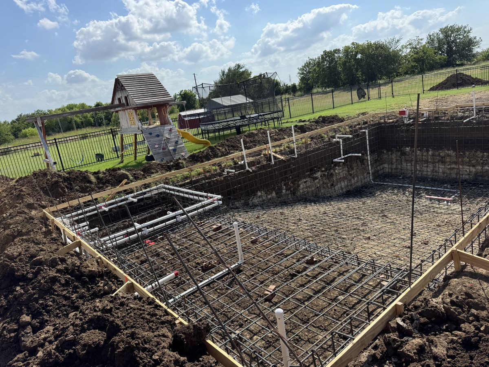

Our Projects
Real Spaces. Fresh Ideas. Possibilities for Your Backyard.
Explore pool and outdoor living projects by JD Pools & Outdoor Living.
From the first form to the finish
The best way to picture what's possible is to see how ideas come together.
Browse our project gallery for inspiration across new pool construction, pool remodeling, custom features, and outdoor living spaces.
Explore Our Work
- New Pool Construction — completed pool builds and custom designs.
- Pool Remodeling — refreshed finishes, updated features, and pool transformations.
- Custom Pool Features — lighting, water features, spas, and other enhancements.
- Outdoor Living — patios, kitchens, gathering areas, and backyard improvements.
- Pool Decking — decking materials, surface updates, and poolside finishes.
Featured project
Mansfield Backyard
New pool construction · Mansfield, TX
- 01
The project
A great backyard gives you a place to unwind, gather with the people who matter, and enjoy home in a whole new way.
- 02
The build
From the first ideas to the finishing details, the project brings together a new gunite pool, entry steps, coping and surrounding decking.
- 03
The finished space
A rectangular pool with blue water, an exposed-aggregate deck and a brick patio creates an outdoor space made for living.
A closer look at the work
Construction Stages
Three documented stages from the Mansfield project. These photographs were taken from different positions, so they are presented as a timeline rather than a before-and-after comparison.
- 01 / STEEL & FORMS

Setting the structure
Steel and forms behind the covered patio.
- 02 / GUNITE

Shaping the pool
The gunite shell with entry steps, before finishing.
- 03 / FINISHED POOL

Pool and deck complete
Blue water, coping and the exposed-aggregate deck.
From the same Mansfield backyard
Before & After
Two comparisons from the Mansfield project. Each pair uses the closest matching viewpoints in the photographs we have; they were not taken from a locked-off camera, so the edges will not line up perfectly.


Project notes
In the Field & Finished
New pool, finishedMansfield, TX Steel and forms, new poolMansfield, TX New pool, finishedMansfield, TX Gunite shell with entry stepsMansfield, TX 
Steel stageMansfield, TX 
Deck steel around new copingMansfield, TX 
New pool, finishedMansfield, TX 
Pool and spa steel layoutRural project 
Forming the deck edgeMansfield, TX
[PLACEHOLDER: more projects, including remodels, features and outdoor living, as the client supplies photos]
From inspiration to your own project
From Inspiration to Your Own Project
See a detail you love? Save the photo or tell us what caught your eye. Your project will be unique to your property and preferences, but examples can help us understand the look and features you're drawn to.